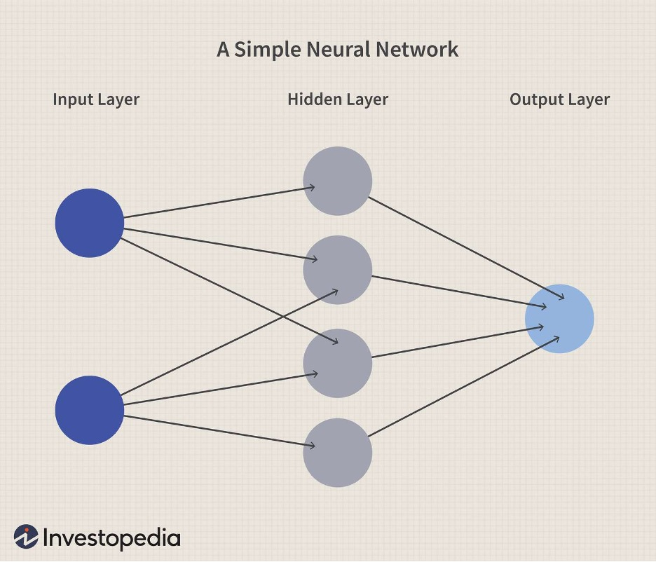
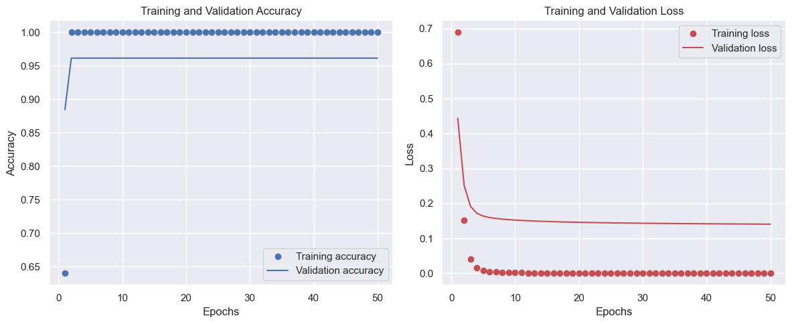
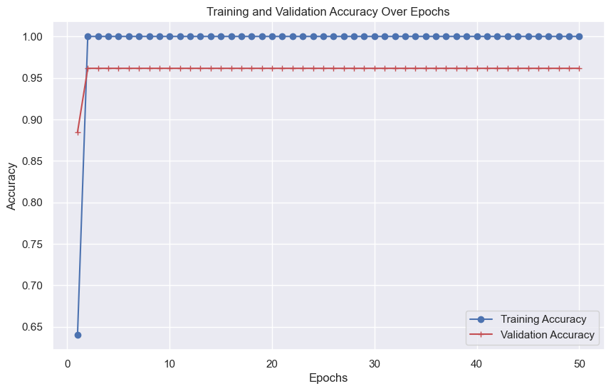
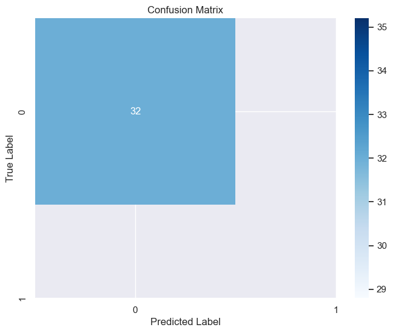

A key element of machine learning are neural networks (NNs), which are created to imitate the way the human brain recognizes patterns and makes choices. An NN is fundamentally made up of layers of connected nodes, or "neurons," that each carry out basic computations. A single neuron model that performs binary decision-making is represented by the most basic form, the perceptron. This is expanded upon by Artificial Neural Networks (ANNs), which handle complex tasks by layering several perceptrons together. Convolutional layers are used by Convolutional Neural Networks (CNNs) to record spatial hierarchies in data having a grid-like layout, such as pictures. Designed for sequential data such as text or time series, Recurrent Neural Networks (RNNs) and their more sophisticated counterpart, Long Short-Term Memory networks (LSTMs), enable information to survive over time through loops in the network design.
Let's delve a bit deeper into the different types of neural networks and their applications:
Supervised learning uses labeled datasets to train models. This means the model tries to predict a label or target value for each piece of data in the training set. Labeled data provides specific examples of input-output pairings, helping the model to understand the relationships between them. The process typically involves several key steps:
Here’s a simple illustration of how a labeled dataset might be structured and how it is split into training and testing sets:
| X1 | X2 | Y |
|---|---|---|
| 6.7 | 3.0 | 1 |
| 5.1 | 3.5 | 0 |
| 6.9 | 3.1 | 1 |
| 4.9 | 3.0 | 0 |
The training set typically includes 70-80% of the data, while the testing set includes 20-30%, ensuring both are disjoint for unbiased performance evaluation.
The accuracy graphs for training and validation display nearly flat at a high level, indicating that the task may not be presenting a significant challenge to the model. If these outcomes are consistent across various data splits and initializations, it suggests the task may be too simple or the data not sufficiently complex. The loss graph shows a sharp drop and rapid stabilization, suggesting that the model quickly identified a suitable local minimum for the loss function, indicating appropriate learning rates and model architecture.
Typically, a performance difference is expected between training and validation. Overfitting is usually indicated if validation accuracy is significantly lower than training accuracy. However, in this instance, even though validation accuracy is slightly lower, it remains high. Overfitting might also manifest as an increase in validation loss over epochs, though it is not observed in this case.
The confusion matrix shows high accuracy for the negative class (assumed '0'). It is crucial to examine both false positives and false negatives to understand the types of errors the model is making and whether these errors are acceptable from a domain standpoint.
Context is crucial, especially when claiming 100% test accuracy. In applications where errors can have serious consequences, like medical diagnostics or autonomous vehicle control, a more conservative approach to accuracy and a deeper understanding of uncertainty may be preferable.
To ensure consistent model performance across various data subsets, methods like k-fold cross-validation can be used. Testing against an entirely independent dataset can also help verify that the model's performance is not just a result of dataset anomalies.
Performing an error analysis can provide insights into why the model fails in specific instances, which is crucial for model improvement.
Evaluating the model’s resilience to input perturbations is essential, especially for critical applications. Small changes in input should not lead to significant changes in output, highlighting the importance of robustness and generalization in model evaluation.
  Several key learnings pertain to neural network modeling and evaluation:
In terms of predictions about the topic, if this model were applied to a real-world scenario, it is expected to perform well, especially for the class it has confidently identified (class '0'). Robustness checks are necessary, as there is a chance that the model may not perform as well on data that differs significantly from the training set. Additionally, the model might require retraining or fine-tuning to maintain high performance when faced with new data or adversarial cases.
All in all, these observations and forecasts highlight the significance of thorough model assessment and the need for cautious consideration when transferring from a controlled testing environment to an actual application.